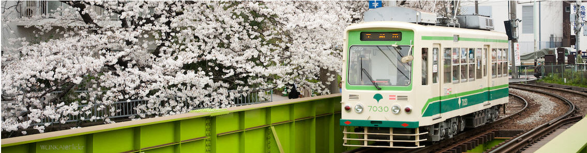

起炊烟 升柴火 吉時下鍋
讓我們一起把旅行煮成一碗好米飯
旅飯好網摘
台灣
住哪裡
產業觀察
關東
日本中部
關西
四國
山陰山陽
九州
沖繩縣
日本 飯好宿
日本 飯之選
日本 飯好味
住哪裡
日本
怎麼走
好吃的
省點錢
行程攻略
旅飯超會玩
產業觀察
一周旅事點評
華麗島地方誌
第一期／一個人走 你就是王
第二期／暢秋辭典
第三期／台南，不難
第四期／帶你媽去玩
第五期／東京洋風甜點大攻略
第六期／隆冬前進北海道！
第七期／去金澤。
第八期／櫻花來了
第九期／女神的見面會
第十期／夏日的清邁
旅飯天天問
旅飯Ｘ桃園國際機場
旅飯 X VWTiguan
航空推薦
旅飯GO
關於旅飯
旅飯好朋友
日本
怎麼走
好吃的
省點錢
行程攻略
台灣
住哪裡
產業觀察
旅飯天天問

旅飯
/
旅飯好網摘
/
怎麼走
團隊介紹／聯絡我們
旅飯 PanTravel © 2017